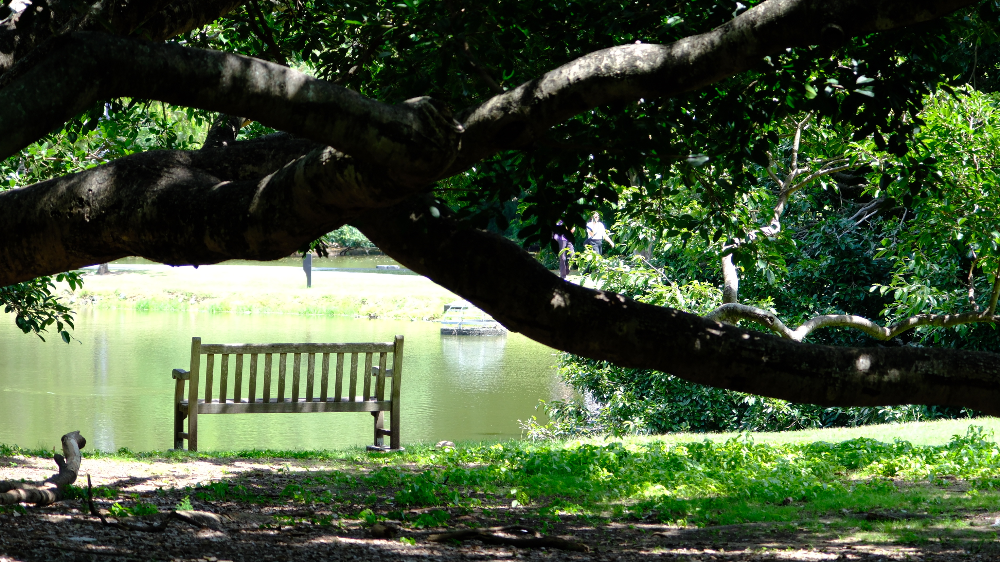
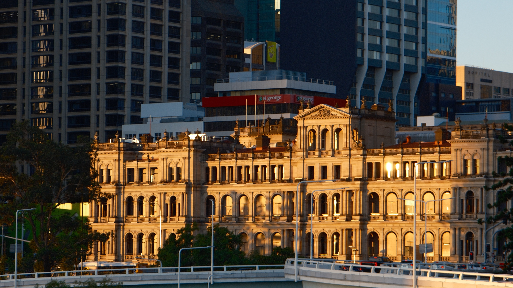
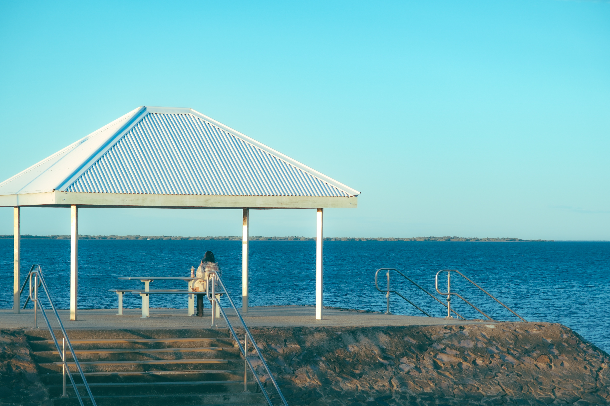
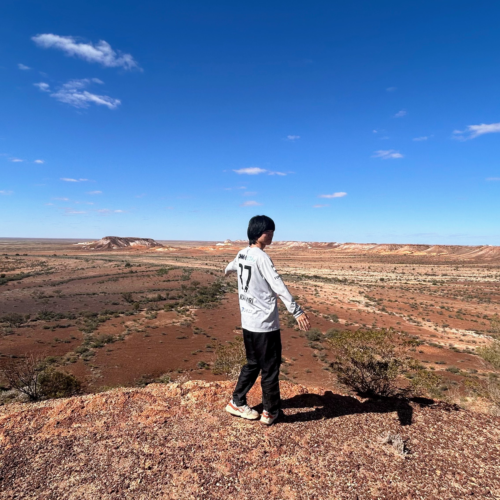
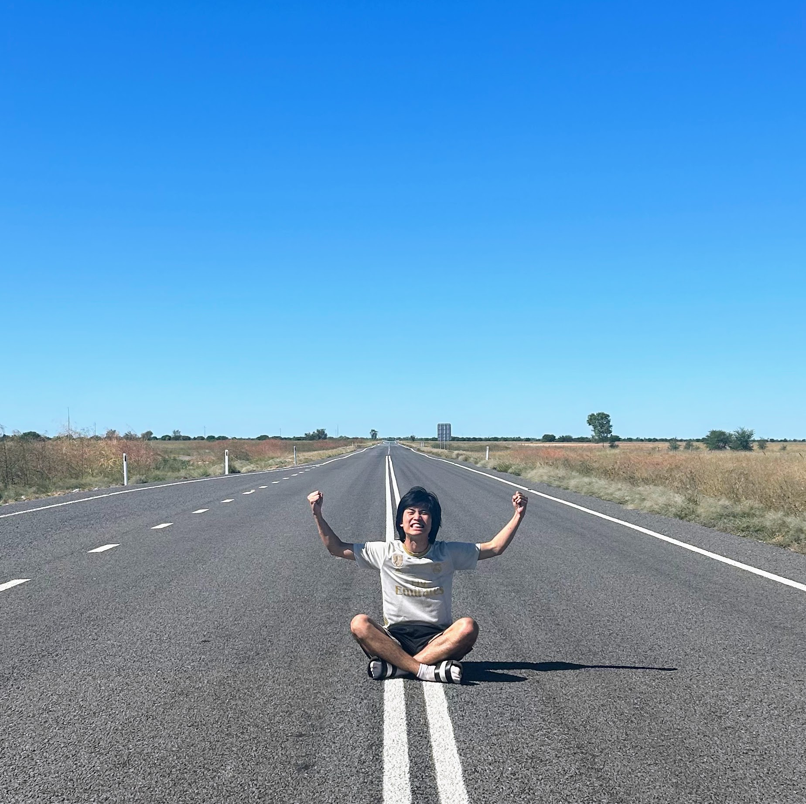
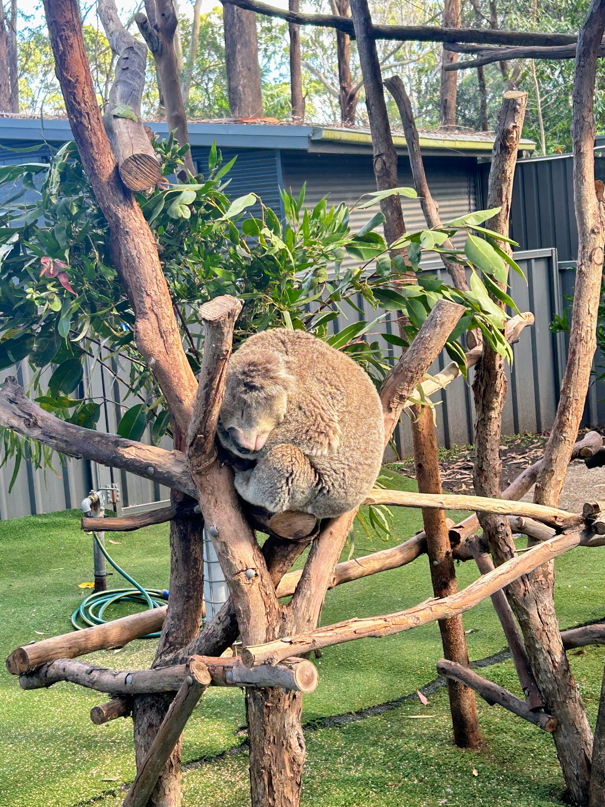
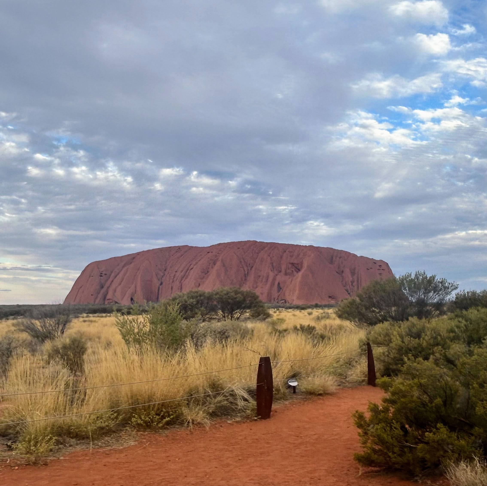
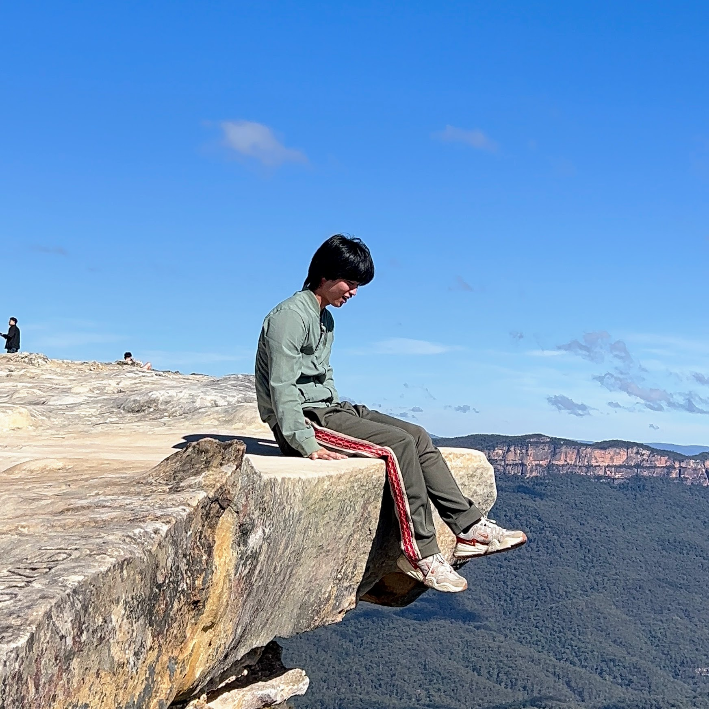
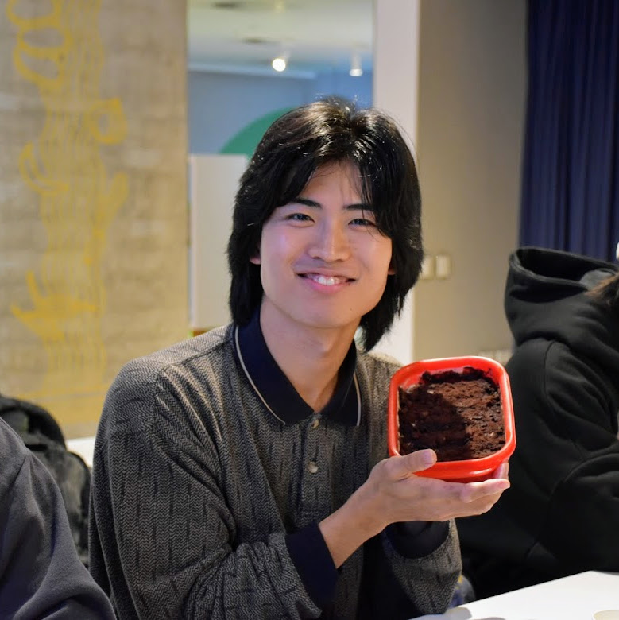

STORY
序章：冒険の始まり
大学院を休学し、オーストラリアへの準備期間。セブ島での語学留学を通じて、海外生活の基礎を築きました。自分の人生を見つめなおし、「このままでは後悔する」という強い思いが込み上げてきました。周りの期待や安定した未来よりも、自分が本当に心惹かれる道を選びたい。そう決意し、休学届を提出。ここから、誰にも縛られない、自分だけの物語を描くための365日が始まりました。


第1章：ブリスベン、孤独とサバイバル
ブリスベン到着後のサバイバル生活。生活インフラの整備と友達作りへの挑戦が始まりました。最初の1週間は本当に過酷でした。住む家を探し、銀行口座を開設し、携帯電話を契約する。一つ一つのタスクが大きな壁のように感じられました。言葉の壁にもぶつかりながら、必死で生活の基盤を築いていきました。



第2章：僕らの「居場所」ができた日
community_brisbaneの誕生と成長。おにぎりイベントを通じて、多くの仲間との出会いが生まれました。当初はルームメイトたちが運営を手伝ってくれましたが、彼らもそれぞれブリスベンを離れていきました。気づけば運営は僕一人に。「もっとやりたかった」という去った仲間の言葉を背負いながらたった一人でコミュニティを続けることに。



第3章：出会い、葛藤、そして大きな決断
仲間との出会いと成長。クリスマス会やBBQを通じて、深い絆が育まれました。相棒や運営メンバーと共に企画したクリスマス会には50人以上が集まり、大成功を収めました。年末のBBQも大盛況。コミュニティが確かに人々の「居場所」になっていることを実感し、感動で胸が熱くなりました。



第4章：365日目の約束
旅の終わりに見つけた「次の一歩」。新たな相棒との出会いと、新たな挑戦への決意。旅を通して見つけた答えは、シンプルでした。ブリスベンに戻り、あのコミュニティをもっと大きく、もっと素晴らしい場所にしたい。そのために、学生ビザを取得してでも挑戦を続けよう。旅は僕の迷いを断ち切り、進むべき道をはっきりと示してくれました。



community_brisbane
運営の哲学
僕らが大切にしていたこと。コミュニティの根幹となる価値観と、それを実現するための具体的な取り組みについて。
仲間集めの流儀
どうやって運営チームを作ったか。信頼できる仲間を見つけ、チームとして機能させるための秘訣を公開。
リーダーとしての苦悩
コミュニティを率いる立場として直面した課題と、それを乗り越えるために学んだこと。失敗から得た貴重な教訓。
これからコミュニティを作りたい君へ
同じ志を持つ仲間たちへのメッセージ。コミュニティ作りに挑戦する人たちに贈る、実践的なアドバイスと心構え。
SKILLS
AI & 業務効率化
イベント管理や情報発信を自動化。AIツールを駆使し、限られた時間で最大の成果を出す方法を学びました。
HP制作 & デザイン
ワーホリ関連のウェブサイトを未経験から構築。想いを形にするデザイン力を身につけました。
マーケティング
どうすれば人の心に響くのか。SNSでの発信一つひとつに戦略と思いを込めて、コミュニティの輪を広げました。
チームビルディング
多様な仲間と一つの目標に向かう難しさと喜びを知り、実践的なチーム作りを学びました。
AI & 業務効率化
イベント管理や情報発信を自動化。AIツールを駆使し、限られた時間で最大の成果を出す方法を学びました。
HP制作 & デザイン
ワーホリ関連のウェブサイトを未経験から構築。想いを形にするデザイン力を身につけました。
マーケティング
どうすれば人の心に響くのか。SNSでの発信一つひとつに戦略と思いを込めて、コミュニティの輪を広げました。
チームビルディング
多様な仲間と一つの目標に向かう難しさと喜びを知り、実践的なチーム作りを学びました。
THANKS
community_brisbaneの仲間たちへ
一緒についてきてくれた仲間がいたから、ここまでこれた。
1stワーホリで出会った、すべての友達へ
このゲームの「365日」を創ってくれてありがとう。
感謝を込めて
community_brisbaneの仲間たちへ
一緒についてきてくれた仲間がいたから、ここまでこれた。
このコミュニティを作り上げる過程で、本当に多くの素晴らしい仲間たちと出会いました。最初は一人で始めた活動でしたが、徐々に運営チームができ、それぞれが自分の得意分野を活かして協力してくれるようになりました。
特に印象的だったのは、みんなが「誰かのために」という気持ちを持って活動してくれたことです。イベントの準備、SNSでの発信、参加者のサポートなど、すべてにおいて献身的に協力してくれました。そのおかげで、多くの人にとっての「居場所」を作ることができました。
一人では決して成し遂げられなかったことを、みんなと一緒に実現できたことに、心から感謝しています。この経験は、僕の人生で最も貴重な宝物になりました。
1stワーホリで出会った、すべての友達へ
このゲームの「365日」を創ってくれてありがとう。
ワーホリという特別な環境で出会ったすべての友達に、心から感謝の気持ちを伝えたいと思います。国籍や文化、年齢を超えて、同じ時間を共有できたことは、本当に幸せでした。
毎週のイベントに参加してくれた人、SNSで応援してくれた人、新しい友達を紹介してくれた人、そして何より、このコミュニティを「居場所」として認めてくれたすべての人に感謝しています。
この365日間で経験したすべてのことが、僕の人生を豊かにしてくれました。笑いあり、涙あり、そして何より、たくさんの愛に包まれた時間でした。みんながいてくれたから、この素晴らしい物語を創ることができました。
これからも、それぞれの道を歩んでいくと思いますが、このブリスベンで過ごした時間は、きっとみんなの心に残り続けるでしょう。またどこかで会える日を楽しみにしています。
本当にありがとうございました。
続きを読む
運営の哲学
僕らが大切にしていたこと。コミュニティの根幹となる価値観と、それを実現するための具体的な取り組みについて。
仲間集めの流儀
どうやって運営チームを作ったか。信頼できる仲間を見つけ、チームとして機能させるための秘訣を公開。
リーダーとしての苦悩
コミュニティを率いる立場として直面した課題と、それを乗り越えるために学んだこと。失敗から得た貴重な教訓。
これからコミュニティを作りたい君へ
同じ志を持つ仲間たちへのメッセージ。コミュニティ作りに挑戦する人たちに贈る、実践的なアドバイスと心構え。